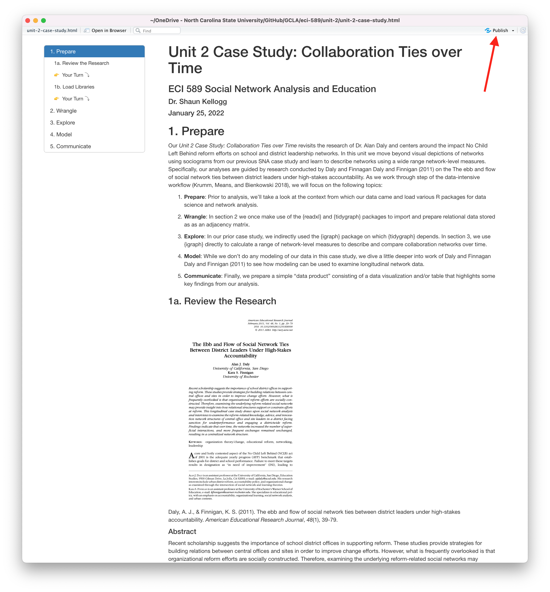

#YOUR CODE HEREComponents, Cliques, & Key Actors
ECI 589 SNA and Education: Unit 3 Case Study
1. PREPARE
Our third SNA case study, Components, Cliques, & Key Actors, is inspired by the work of Jonathan Supovitz, Alan Daly, Miguel del Fresno and Christian Kolouch who examined the intense debate surrounding the Common Core State Standards education reform as it played out on Twitter. As noted on their expansive and interactive website for the #COMMONCORE Project, the Common Core was a major education policy initiative of the early 21st century. A primary aim of the Common Core was to strengthen education systems across the United States through a set of specific and challenging education standards. Although these standards once enjoyed bipartisan support, we saw in our previous case study how these standards have become a political punching bag.
In ECI 588 Text Mining in Education, we examined public sentiment around the Common Core and Next Generation Science Standards. This analysis compliments that investigation by examining groups and central actors in networks that developed around tweets about the common core. Specifically, this case study will cover the following topics pertaining to each data-intensive workflow process:
Prepare: Prior to analysis, we’ll take a look at the context from which our data originated, formulate some research questions, and get introduced the {tidygraph} and {ggraph} packages for analyzing relational data.
Wrangle: In the wrangling section of our case study, we will learn some basic techniques for manipulating, cleaning, transforming, and merging network data.
Explore: With our network data now tidy, we learn to calculate some key measures for individuals in our network and illustrate key actors through network visualization.
Model: We conclude our analysis by introducing community detection algorithms for identifying groups and revisiting sentiment about the common core.
Communicate: Finally, we prepare our case study for sharing by rendering our Quarto file to a webpage writing a brief reflection.
1a. Review the Research
Recall from Social Network Analysis and Education: Theory, Methods & Applications that the following four features used by @freeman2004development to define the social network perspective:
Social network analysis is motivated by a relational intuition based on ties connecting social actors.
It is firmly grounded in systematic empirical data.
It makes use of graphic imagery to represent actors and their relations with one another.
It relies on mathematical and/or computational models to succinctly represent the complexity of social life.
The #COMMONCORE Project that we’ll examine next is an exemplary illustration of these four defining features of the social network perspective.
The #commoncore Project

Supovitz, J., Daly, A.J., del Fresno, M., & Kolouch, C. (2017). #commoncore Project. Retrieved from http://www.hashtagcommoncore.com.
Prologue
As noted by Supovitz et al. (2017), the Common Core State Standards have been a “persistent flashpoint in the debate over the direction of American education.” The #commoncore Project explores the Common Core debate on Twitter using a combination of social network analyses and psychological investigations which help to reveal both the underlying social structure of the conversation and the motivations of the participants.
The central question guiding this investigation was:
How are social media-enabled social networks changing the discourse in American politics that produces and sustains education policy?
Data Sources & Analyses
The methods page of the #COMMONCORE Project provides a detailed discussion of the data and analyses used to arrive at the conclusions in #commoncore: How social media is changing the politics of education. Provided below is a summary of how authors retrieved data from Twitter and the analyses applied for each of the five acts in the website. I highly encourage you to take a look at this section if you’d like to learn more about their approach and in particular if you’re unfamiliar with how users can interact and communicate on Twitter.
Data Collection
To collect data on keywords related to the Common Core, the project used a customized data collection tool developed by two of our co-authors, Miguel del Fresno and Alan J. Daly, called Social Runner Lab. Similar to an approach we use in ECI 588 Text Mining in Education, Twitter Sentiment and School Reform, the authors downloaded data in real time directly from Twitter’s Application Programming Interface (API) based on tweets using specified keywords, keyphrases, or hashtags and then restricted their analysis to the following terms: commoncore, ccss and stopcommoncore. They also captured Twitter profile names, or user names, as well as the tweets, retweets, and mentions posted. Data included messages that are public on twitter, but not private direct messages between individuals, nor from accounts which users have made private.
Analyses
In order to address their research question, the authors applied social network analysis techniques in addition to qualitative and automated text mining approaches. For social network analyses, each node is an individual Twitter user (person, group, institution, etc.) and the connection between each node is the tweet, retweet, or mention/reply. After retrieving data from the Twitter API, the authors created a file that could be analyzed in Gephi, an open-source software program which depicts the relations as networks and provides metrics for describing features of the network.
In addition to data visualization and network descriptives, the authors examined group development and lexical tendencies among users. For group development, they used a community detection algorithm to identify and represent structural sub-communities, or “factions”, which they describe as a group with more ties within than across group even those group boundaries are somewhat porous). For lexical tendencies, the authors used the Linguistic Inquiry and Word Count (LIWC) lexicons to determine psychological drive, diagnose their level of conviction, make inferences about thinking styles, and even determine sentiment similar to what we examine in ECI 588.
For a nice summary of the data used for the analysis, as well as the samples of actors and tweets, the keywords, and the methods that were utilized, see Table 1. Data and Method for Each Act in the Methods section of the #commoncore website.
Key Findings
In the #commoncore Project, analyses of almost 1 million tweets sent by about 190,000 distinct actors over a period of 32 months revealed the following:
- In Act 1, The Giant Network, the authors identified five major sub-communities, or factions, in the Twitter debate surrounding the Common Core, including: (1) supporters of the Common Core, (2) opponents of the standards from inside education, and (3) opponents from outside of education.
- In Act 2, Central Actors, they noted that most of these participants were casual contributors – almost 95% of them made fewer than 10 tweets in any given six-month period. They also distinguished between two types of influence on Twitter: Transmitters who tweeted a lot, regardless of the extent of their followership; and Transceivers, those who gained their influence by being frequently retweeted and mentioned.
- In Act 3, Key Events, the authors identified issues driving the major spikes in the conversation, like when Secretary of Education Duncan spoke about white suburban moms’ opposition to the Common Core, or the debate over the authorization of the Every Student Succeeds Act in November 2015. They also offended evidence of manufactured controversies spurred by sensationalizing minor issues and outright fake news stories.
- In Act 4, Lexical Tendencies, the authors examined the linguistic tendencies of the three major factions and found that Common Core supporters used the highest number of conviction words, tended to use more achievement-oriented language, and used more words associated with a formal and analytic thinking style. By contrast, opponents of the Common Core from within education tended to use more words associated with sadness, and used more narrative thinking style language. Opponents of the Common Core from outside of education made the highest use of words associated with peer affiliation, used the largest number of angry words, and exhibited the lowest level of conviction in their word choices.
- In Act 5, The Tweet Machine, examined five frames that opponents of the Common Core used to appeal to values of particular subgroups including the government frame, business frame, war frame, experiment frame, and propaganda frame. By combining these constituencies, the authors illustrated how the Common Core developed a strong transpartisan coalition of opposition.
üëâ Your Turn ‚§µ
For our SNA Lab 3 case study, we’ll apply some of the same techniques used by this study including calculating some basic network measures of centrality. For example, take a look at the Explore the Networks section from Act 2: Central Actors and the Transmitters, Transceivers and Transcenders.
Click on each of the boxes for a select time period and in the space below list a couple Twitter users identified by their analysis as the following:
Transmitters: YOUR RESPONSE HERE
Transceivers: YOUR RESPONSE HERE
Transcenders: YOUR RESPONSE HERE
Now visit Act 2 of the methods section and In the space below, identify the network measure used for the first two central actors (hint: it’s italicized) and copy their definition used. Note, Transcenders has been completed for you.
Transmitters YOUR RESPONSE HERE
Transceivers YOUR RESPONSE HERE
Transcenders is measured by degree and consists of actors (i.e. Twitter uers) who have both high out-degree, as well as having high in-degree.
1b. Identify a Question(s)
Recall from above that the central question guiding the #COMMONCORE Project was:
How are social media-enabled social networks changing the discourse in American politics that produces and sustains education policy?
For Unit 3, we are going to focus our questions on something a bit less ambitious but inspired by this work:
Who are the transmitters, transceivers, and transcenders in our Common Core Twitter network?
What subgroups, or factions, exist in our network?
Which actors in our network tend to be more opposed to the Common Core?
To address the last question, we’ll introduce the {VADER} package for sentiment analysis in our modeling section.
üëâ Your Turn ‚§µ
Based on what you know about networks and the context so far, what other research question(s) might ask we ask in this context that a social network perspective might be able to answer?
In the space below, type a brief response to the following questions:
- YOUR RESPONSE HERE
1c. Set Up Project
As highlighted in Chapter 6 of Data Science in Education Using R (DSIEUR), one of the first steps of every workflow should be to set up your “Project” within RStudio. Recall that:
A Project is the home for all of the files, images, reports, and code that are used in any given project
In our ECI 589 SNA and Education Workspace on Posit Cloud, an RStudio Project titled Unit 3 - Case Study has already been set up for you and includes a .Rproj file in the main directory in the Files pane. Go there and see if you can locate it.
Load Libraries
In Unit 1, we also learned about packages, or libraries, which are shareable collections of R code that can contain functions, data, and/or documentation and extend the functionality of R. You can always check to see which packages have already been installed and loaded into Posit Cloud by looking at the the Files, Plots, & Packages Pane in the lower right hand corner.
üëâ Your Turn ‚§µ
First, load the following packages introduced in previous case studies and that we’ll be using again to wrangling and explore our data later sections:
- tidyverse
- igraph
- tidygraph
- ggraph
- skimr
2. WRANGLE
In general, data wrangling involves some combination of cleaning, reshaping, transforming, and merging data (Wickham and Grolemund 2016). As highlighted in Estrellado et al. (2020), wrangling network data can be even more challenging than other data sources since network data often includes variables about both individuals and their relationships.
For our data wrangling this week, we’re keeping it simple since working with relational data is a bit of a departure from our working with rectangular data frames. In this lab, we’ll revisit how to:
Import Data. We revisit the
read_csv()function from the tidyverse {readr} package to read theccss-tweets-fresh.csvfile from the data folder.Format Network Data. We shape our data files into two common formats for storing network data: edgelists and nodelists.
Create a Network Object. Finally, we’ll need to convert our data frames into special data format, an R network object, for working with relational data.
2a. Import Data
To help keep things simple, we’ll be using a data download from twitter that only includes relatively small set of tweets from a single week. Network graphs can quickly get unwieldy as the nodes in your network grow.
The #commoncore project does an excellent job visualizing large networks using advanced techniques. We’ll focus on a relatively small network since we are using some very basic techniques for visualization.
Run the following code to use the read_csv() function from the {readr} package to read the ccss-tweets-fresh.csv file from the data folder and assign to a new data frame named ccss_tweets:
ccss_tweets <- read_csv("data/ccss-tweets-simple.csv")2b. Format Network Data
Recall from Chapter 1 of 1 that ties, or relations, are what connect actors to one another. These ties are often referred to as “edges” when formatting and graphing network data and the range of ties in a network can be extensive. Some of the more common ties, or edges, used to denote connections among actors in educational research include:
Behavioral interaction (e.g., talking to each other or sending messages)
Physical connection (e.g., sitting together at lunch, living in the same neighborhood)
Association or affiliation (e.g., taking the same courses, belonging to the same peer group)
Evaluation of one person by another (e.g., considering someone a friend or enemy)
Formal relations (e.g., knowing who has authority over whom)
Moving between places or status (e.g., school choice preferences, dating patterns among adolescents)
Create Edgelist
Recall that the edgelist format is slightly different than other formats you have likely worked with in that the values in the first two columns of each row represent a dyad, or tie between two nodes in a network. An edge-list can also contain other information regarding the strength, duration, or frequency of the relationship, sometime called weight, in addition to other “edge attributes.”
For our analysis of tweets in this case study, we’ll use an approach similar to that used by Supovitz et al. (2017). Specifically, each node is an individual Twitter user (person, group, institution, etc.) and the connection between each node is the tweet, retweet, or mention/reply.
üëâ Your Turn ‚§µ
Use the code chunk that follows, view the data we just imported using one of your favorite methods for inspecting data and answer the question that follows:
#YOUR CODE HEREWhich columns you think could be used to construct an edge list.
- YOUR RESPONSE HERE
Extract Edges and Nodes
If one of the columns you indicated in your response above included screen_name nice work! You may also have noticed that the mentions_screen_name column includes the names of those in the reply column, as well as those “mentioned” in each tweet, i.e. whose username was included in a post.
As noted above, an edgelist includes the nodes that make up a tie or dyad. Since the only two columns we need to construct our edgelist is the screen_name of the tweet author and the screen names of those included in the mentions, let’s:
relocate()and rename those columns tosenderandtargetto indicate the “direction” of the tweet;select()those columns along with any attributes that we think might be useful for analysis later on, like the timestamp or content of the tweet, i.e.text;assign our new data frame to
ties_1.
Note that we also use R’s new built in |> pipe operator, which serves the same purpose as the older tidyverse %>% pipe operator.
ties_1 <- ccss_tweets |>
relocate(sender = screen_name, # rename scree_name to sender
target = mentions_screen_name) |> # rename to receiver
select(sender,
target,
created_at,
text)
ties_1Our edgelist with attributes is almost ready, but we have a couple of issues we still need to deal with.
As you may have noticed, our receiver column contains the names of multiple Twitter users, but a dyad or tie can only be between two actors or nodes.
In order to place each target user in a separate row that corresponds with each sender of the tweet, we will need to “unnest” these names using the {tidytext} package from Unit 3.
The tidytext Package üì¶

As we’ll learn first hand in this module, using tidy data principles can also make many text mining tasks easier, more effective, and consistent with tools already in wide use. The {tidytext} package helps to convert text into data frames of individual words, making it easy to to manipulate, summarize, and visualize text using using familiar functions form the {tidyverse} collection of packages.
Let’s go ahead and load the {tidytext} package:
library(tidytext)For a more comprehensive introduction to the tidytext package, I cannot recommend enough the free and excellent online book, Text Mining with R: A Tidy Approach (Silge and Robinson 2017). If you’re interested in pursuing text analysis using R post Summer Workshop, this will be a go to reference.
“Unnest” User Names
The {tidytext} package has a very handy unnest_tokens() function to extract individual words from tweets. We’ll use it to place target of each tweet into separate rows corresponding to the sender of each tweet.
Run the following code and take a look at the new data frame to make sure it looks as expect and to spot any potential issues:
ties_2 <- ties_1 |>
unnest_tokens(input = target,
output = receiver,
to_lower = FALSE) |>
relocate(sender, receiver)
ties_2You probably noticed one issue that we could deal with in a couple different ways. Specifically, many tweets are not directed at other users and hence the value for receiver is NA. We could keep these users as “isolates” in our network, but let’s simply remove them since our primary goal is to identify transmitters, transceivers and transcenders.
üëâ Your Turn ‚§µ
In the code chunk below, use the drop_na() function to remove the rows with missing values from our receiver column in our ties-2 data frame since they are incomplete dyads. Save your final edgelist as ties using the <- assignment operator.
#YOUR CODE HERENow use the code chunk below to take a quick look at our final edgelist and answer the questions that follow:
#YOUR CODE HEREHow many edges are in our CCSS network?
- YOUR RESPONSE HERE
What do these ties/edges/connections represent?
- YOUR RESPONSE HERE
When do they start and end?
- YOUR RESPONSE HERE
Well done!!! Before moving on to the the nodes in our network, run the following code chunk to save our edgelist to a .csv file in our data folder for later use:
write_csv(ties, "data/ccss-edgelist.csv")Create Nodelist
The second file we need to create is a data frame that contains all the individuals in our network, often referred to as nodes or actors. This list sometimes includes attributes that we might want to examine as part of our analysis as well, like the number of Twitter followers, demographic group, country, gender, etc. This file or data frame is sometimes referred to as a nodelist or node attribute file.
To construct our basic nodelist, we will use the pivot_longer() function from the tidyverse {dplyr} package, an updated version of the gather() function introduced in the RStudio Reshape Data Primer.
Run the following code to select the usernames form our ties edgelist, merge our sender and receiver columns into a single column, and take a quick look at our new data frame.
actors_1 <- ties |>
select(sender, receiver) |>
pivot_longer(cols = c(sender,receiver))
actors_1As you can see, our sender and receiver usernames have been combined into a single column called value with a new column indicating whether they were a sender or receiver called name by default.
Since we’re only interested in usernames for our nodelist, and since we have a number of duplicate names, let’s select just the value column, rename it to actors, and use the distinct() function from {dplyr} to keep only unique names and remove duplicates:
actors <- actors_1 |>
select(value) |>
rename(actors = value) |>
distinct()üëâ Your Turn ‚§µ
Use the code chunk below to take a quick look at our final actors data frame and answer question that follows:
#YOUR CODE HEREHow many unique node/actors are in our CCSS network?
- YOUR RESPONSE HERE
Before we move on, save your nodelist to a .csv file in your data folder using the write_csv() function as we did above:
#YOUR CODE HERE2c. Create Network Object
Before we can begin using many of the functions from the {tidygraph} and {ggraph} packages for summarizing and visualizing our Common Core Twitter network, we first need to convert our node and edge lists into network object.
Combine Edges & Nodes
Recall that the {tidygraph} package contains a tbl_graph() function that includes the following arguments:
edges =expects a data frame, in our caseties, containing information about the edges in the graph. The nodes of each edge must either be in atoandfromcolumn, or in the two first columns like the data frame we provided.nodes =expects a data frame, in our caseactors, containing information about the nodes in the graph. Iftoand/orfromare characters or names, like in our data frames, then they will be matched to the column named according tonode_keyin nodes, if it exists, or matched to the first column in the node list.directed =specifies whether the constructed graph should be directed, i.e. include information about whether each node is the sender or target of a connection. By default this is set toTRUE.
Let’s go ahead and create our network graph, name it network and print the output:
ccss_network <- tbl_graph(edges = ties,
nodes = actors,
directed = TRUE)
ccss_networküëâ Your Turn ‚§µ
Take a look at the output for our simple graph above and answer the following questions:
Are the numbers and names of nodes and actors consistent with our
actorsandtiesdata frames? What about the integers included in thefromandtocolumns of the Edge Data?- YOUR RESPONSE HERE
What do you think “components” refers to? Hint: see Chapter 6 of
- YOUR RESPONSE HERE
Is our network directed or undirected?
- YOUR RESPONSE HERE
A quick reminder about “directed” networks. A directed network indicates that a connection or tie is not necessarily reciprocated or mutual. For example, our network is directed because even though a user may follow, mention or reply to someone else, they may not necessarily receive a follow, mention or reply back. A facebook friendship network is undirected, however, since someone can not “friend” someone on Facebook without them also indicating a “friend” relationship, so the friendship is mutual or reciprocated.
3. EXPLORE
As noted in the previous units, exploratory data analysis involves the processes of describing your network through mathematical measures and/or data visualization. In Section 3, we learn some new functions for identifying groups and subgroups and creating node-level measures to identify central actors in our network. Specifically, in this section we’ll focus on:
Group Analysis. We take a look at both a top-down and bottom-up approach to identifying groups within a network by examining the weak and strong components in our network as well as existing cliques.
Egocentric Analysis. We also examine the size of an ego’s “local neighborhood” as well as key centrality measures for each node such as degree, closeness, and betweenness.
3a. Group Analysis: Components, Cliques & Communities
Components
As noted in Social Network Analysis and Education (Carolan 2014), one of the most basic ways in which network researchers first characterize a network’s substructure is to identify its components.
A component is a connected subgraph in which there is a path between all pairs of nodes.
Recall from our output above that our directed “multigraph” had 13 components. Let’s take a quick look at our network using the {tidygraph} autograph() function and see if we can spot the 13 components:
autograph(ccss_network)As you can see, the autograph() function arranges our components by their size, or number of actors.
Directed graphs, such as our CCSS twitter network, have two different kinds of components: weak and strong. A weak component, as illustrated above, ignores the direction of a tie; strong components do not. In other words:
Strong components consist of nodes that are connected to one another via both directions along the path that connects them.
This concept of a component is simple and very useful, especially when analyzing a large network with many components. Often, researchers extract each component and analyze it as a separate network. We won’t be doing that here, but it would be very reasonable to remove the isolates from our network prior to further analysis.
The {igraph} package has a simple function for identifying the number of components in a network, the size of each component, and which actors belong to each. Let’s first take a quick look at the summaries for “weak” components in our network:
components(ccss_network, mode = c("weak"))While not incredibly intuitive to interpret, the output indicates that there are 13 components as we discovered above, 1 component has 51 members and the smallest components only have 2 members.
üëâ Your Turn ‚§µ
How do you think you might find the “strong” components in our network using the component() function? Use the following code chunk to test out your theory:
# YOUR CODE HEREWow! If your code was correct, you’ll see that we have a whopping 92 distinct components!
One issue with this {igraph} output, and that the {tidygraph} package is great at solving, is identifying and saving as a new variable who belongs to which component. We can sort of see from above that the most twitter users in our network belong to component 11.
As demonstrated in the previous case study, the {tidygraph} package has a very useful activate() function for working with our nodes and edges as if they were standard “tibbles,” or tidy data tables.
Let’s use the activate() function to single out the node list in our network and use the familiar mutate() and group_components() functions to create a new weak_component variable that indicates and saves the weak components to which each node belongs:
ccss_network <- ccss_network |>
activate(nodes) |>
mutate(weak_component = group_components(type = "weak"))Now take a look at the nodes in our new ccss_network, which should now contain our new variable.
ccss_networkWe could also use another handy function from the {tidygraph} package, as_tibble(), that will temporarily convert our node list to a standard table that will allow us to view every row in our node list:
as_tibble(ccss_network)We could even extend this if we liked to create some standard table summaries using the summarise() function. Run the code below to create a count of the number of nodes in each strong component:
ccss_network |>
as_tibble() |>
group_by(weak_component) |>
summarise(count = n()) |>
arrange(desc(count))The activate() function from the {tidygraph} package is a powerful tool that let’s you leverage the entire suite of {tidyverse} packages to analyze nodes and edges in a network! We’ll be using the activate function again in section 3b. Egocentric Analysis: Size & Centrality to calculate node-level measures.
Important Note: In the code above, it’s important to take note when we have permanently altered our ccss_network object and when we have only made temporary changes to our network. For example, when creating a new variable for weak_component, we assigned the changes made to ccss_network to an object of the same name using the <- assignment operator. This effectively overwrites the old object with the new object because we wanted to save the new variable created. However, when converting network to a tibble consisting of nodes and their weak_component id, we did not assign to ccss_network because we did not want to permanently change to our network object to a rectangular data frame, or tibble in tidyverse speak.
üëâ Your Turn ‚§µ
Use the activate(), mutate() and group_components() functions to create a new strong_component variable that indicates and saves the strong components to which each node belongs. Then create a summary table like above and answer the question that follows.
#YOUR CODE HEREIf you did this correctly, your analysis should be VERY revealing about the “conversation” around the common core based on this small sample of tweets.
Which strong component had the most members? Hint: this is a trick question.
- YOUR RESPONSE HERE
What do you think this tells us about the conversation around the common core?
- YOUR RESPONSE HERE
Cliques
Whereas top-down approaches to group analysis focus on the complete network and considers parts of it that distinct from the rest of the network, the bottom-up approach focuses is built up from simple dyads and triads that extend into dense clusters that give the network its “clumpiness.” Similar to complete network measures, there are several important properties for which precise definitions and algorithms have been developed, including cliques, clans, plexes, and cores (Carolan 2014).
Examining cliques is one bottom-up approach that reveals how groups are distributed in the network and which actors belong to which groups.
A clique is a maximally connected subgraph of nodes (> 2) in which all nodes are connected to each other.
Similar to our component analysis, the {igraph} function has a simple clique_num() function for identifying number of completely connected subgroups in a network:
clique_num(ccss_network)As you probably saw above, the clique_num() function does not take into account directionality of our ties. It looks like we have 3 clusters of at least 3 actors that all have ties to one another.
The {igraph} function also has a simple cliques() function for identifying members who belong to the same group. In addition to specifying the network you want to examine, this function also allows you to set the minimum and maximum number of members to included in a clique.
Let’s see if there are any cliques that contain a minimum of 4 nodes?
cliques(ccss_network, min = 4, max = NULL)Nope! That empty list() indicates there are no cliques with . Again, very informative about the “conversation” around the common core.
Communities
Unfortunately, the {tidygraph} package does not have a clustering function for cliques. It does, however, include a range popular clustering functions provided that use range of functions that group nodes and edges based on “community structure.” Some of these community detection algorithms are designed for directed graphs (e.g. our weak component analysis above), while others are for undirected graphs.
One community detection algorithm similar to our clique analysis above is the group_edge_betweenness() function, which groups densely connected nodes together. The betweenness centrality measures is something we will look at more closely in the next section.
Because this function can only be used with undirected networks, we will need to pipe |> our dlt_network through the following functions in sequence:
morph()with theto_undirectedargument will temporarily change our directed network to an undirected network, or “symmetrize” our network as discussed in Carolan 1;activate()will select just ournodeslist;mutate()will created a newsubgroupvariable using thegroup_edgebetweenness()function;unmorph()will change our undirected network back to a directed network.
Run the following code to group our nodes based on their edge betweenness and print our updated ccss_network object and take a quick look. Because this is a bit computationally intensive, it make take a minute or so to run.
ccss_network <- ccss_network |>
morph(to_undirected) |>
activate(nodes) |>
mutate(sub_group = group_edge_betweenness()) |>
unmorph()
ccss_network |>
as_tibble()As you scroll through the nodes tibble produced, you should now see at the far end a new subgroup variable that includes an ID number indicating to which densely connected cluster each node belongs.
Note, that if we had wanted to permanently convert our network to an undirected network, we could use the to_undirected argument as a stand-alone function.
ccss_undirected <- to_undirected(ccss_network)
ccss_undirectedNow let’s get a quick count of the number of members in each sub_group. Run the following code to group our nodes and print our new ccss_network object and take a quick look:
ccss_network |>
activate(nodes) |>
as_tibble() |>
group_by(sub_group) |>
summarise(count = n()) |>
arrange(desc(count))üëâ Your Turn ‚§µ
We’ve only scratched the surface of the range of top-down and bottom-up group analysis functions available in the {igraph} and {tidygraph} packages. In the code chunk below, try out one of the other grouping functions available in the tidygraph or igraph packages to examine groups withing the dlt1_network:
#YOUR CODE HERE3b. Egocentric Analysis: Size & Centrality
In this section, we shift out analytical lens from groups to egos and the pattern of relations in which each individual is embedded. Implicit in egocentric analysis, and also very intuitive to understand, is that:
An individual’s (ego) connections with others (alters) provides access to some instrumental (e.g., advice) or expressive (e.g., support) resource that may, in turn, be beneficial.
As summarized by Carolan 1, the structure and content of these relations between an ego and a set of alters is the focus of egocentric network analysis. Since our research question aims to identify “key actors” in our network, we will look at two characteristics of an ego’s connections that are indicative their importance: size and centrality.
Size
Recall from our previous case study focused on complete network analysis, one simple and often ignored structural property of a social network is its size. This also applies to egocentric analysis.
Size is simply the number of alters that are directly connected to ego.
This characteristic is also sometimes referred to as an ego’s local neighborhood, and as Carolan points out, size matters, because it indicates the amount of potential resources available in one’s network. For example, a student with a small friendship network may be at a disadvantage when it comes seeking support on schoolwork or advice on course or college enrollment.
We can use the same {tidygraph} process that we used for identifying groups and individual membership to calculate the size for each node. Specifically, we will need to activate() the nodes in our network and create a new variable which we’ll call size that is calculated using the local_size() function.
And since it’s much easier to inspect our data as a tibble than using the graph output, we’ll also convert our node to a table and arrange() in descending order by size to make it easier to see the range in values of our network:
ccss_network <- ccss_network |>
activate(nodes) |>
mutate(size = local_size())
ccss_network |>
as_tibble() |>
arrange(desc(size)) |>
select(actors, size)Centrality
As we learned in our previous case study and readings, a key structural property of networks is the concept of centralization. A network that is highly centralized is one in which relations are focused on a small number of actors or even a single actor in a network, whereas ties in a decentralized network are diffuse and spread over a number of actors.
Degree
One of the most common descriptives reported in network studies and a primary measure of centralization is degree.
Degree is the number of ties to and from an ego. In a directed network, in-degree is the number of ties received, whereas out-degree is the number of ties sent.
The {tidygraph} package has an aptly named function centrality_degree() for calculating degree, in-degree, and out-degree for all actors in a network.
Run the following create two new variables for our nodes: in_dgree and out_degree. We’ll set the mode = argument in centrality_degree() function to "in" and "out" respectively.
ccss_network <- ccss_network |>
activate(nodes) |>
mutate(in_degree = centrality_degree(mode = "in"),
out_degree = centrality_degree(mode = "out"))
ccss_network |>
as_tibble()A Quick Note about Multigraphs and Tie Strength
You may have noticed in this network that indegree for twitter user “rdsathene” exceeds the total number of nodes in our network and are probably wondering how that is possible. Recall that our network is currently treated at a “multigraph,” indicating that some dyads have multiple edges. Therefore, some edges between dyads are counted more than once.
Alternatively, we could “simplify” our network by collapsing multiple edges between the same actors and assigning a value to edges between actors indicating tie strength. In this case it would be a measure of frequency of replies between actors. However, in the process of simplifying our network, we would lose important contextual information about the context of each tie, such as the when (timestamp) each tie was created.
üëâ Your Turn ‚§µ
Let’s dust off our ggplot() skills by completing the following code to create a histogram that shows the distribution of in_degree (i.e. the number of replies or mentions a user has received) for Twitter users in our network.
ccss_network |>
as_tibble() |>
_____() +
____________(aes(x = _______))Hint: Your output should look something like this:
As you can see, roughly half the egos in the network received about 5 replies or mentions from other users, and no one received more than 6 replies.
Compositional and Variance Measures
Carolan 1 notes that there are two types of measures that can emerge from egocentric data: compositional and variance. Compositional measures are those created by counting or taking the average of egocentric network variables. Variance measures, on the other hand, are simply those that are derived by calculating the variance or standard deviation of the egocentric network variables.
While we could calculate individually the mean and variance for each egocentric measure created above using the summarise() function demonstrated earlier, R has a package and function to save us the effort.
To quickly calculate summary statistics for our nodes, including compositional and variance measures for our egocentric measures, we can use the skim() function from the {skimr} package to take a quick look at the variables in our node list:
ccss_network |>
as_tibble() |>
skim()We can see, for example, that egos in our network are connected with on average just 2.8 alters. Notice also that our mean for in-degree and out-degree are identical. This will always be the case since for every tie that goes “in” there is always one going “out.”
Just like our {tidygraph} package, the {skimr} package also plays nicely with other {tidyverse} packages for data wrangling and analysis. For example, let’s select twitter users connected with fewer than 51 alters and group_by() their weak_component id to calculate compositional and variance measures for size for each component:
ccss_network |>
as_tibble() |>
filter(size < 51) |>
group_by(weak_component) |>
select(size) |>
skim()As illustrated by the output above, we can see that “otheredprof” (i.e., other educational professionals including our facilitators) were connected with the most individuals on average (18.9), while educators in “Operations” connected with the fewest individuals on average (3).
Closeness & Betweenness
Two other centrality measures for identifying key actors in a network are closeness and betweenness. Whereas degree centrality is a local measure and can be calculated without needing information about the overall pattern of relations among ego and alters, closeness and betweenness address this shortcoming by taking into account indirect ties among all the alters in an ego’s network.
Closeness centrality captures the average distance an actor is from all other actors in the network and is a function of an actor’s geodesic distance to others, which equals the length of shortest path connecting a pair of actors. It’s an intuitively appealing measure in that being “close” to others may provide an advantage by giving you early access to new information or by indicating how quickly an actor can exchange something with others (Knoke & Yang, 2008).
Betweenness centrality measures the degree to which other actors lie on the shortest geodesic path between pairs of actors in the network. Betweenness may be indicative of how actors control or mediate the relations between pairs of actors that are not directly connected. Therefore, this measure is an important indicator of control over information exchange or resource flows within a network (Knoke & Yang, 2008). The more any given actor is located on the path between numerous dyads, the higher that actor’s potential to control network interactions. This concept and its associated measure is very appealing, as it captures the degree to which an actor occupies a strategically important position.
üëâ Your Turn ‚§µ
Use the code chunk below to add a closeness and betweenness variable to the nodes in our network and answer the questions that follow. Hint: you may want to look at the functions to calculate node and edge centrality on the {tidygraph} package website.
# YOUR CODE HEREWhich two actors have the highest betweenness and what is unique about their role in the course?
- YOUR RESPONSE HERE
Do these same two actors also have the highest closeness? How might you interpret that?
- YOUR RESPONSE HERE
Again, we’ve only scratched the surface of the vast number of centrality measures available in the {igraph} and {tidygraph} packages. Feel free to explore other functions to calculate node and edge centrality in these two packages.
3c. Visualize Network Descriptives
If you recall from 1a. Review the Research section, one of the defining characteristics of the social network perspective is its use of graphic imagery to represent actors and their relations with one another. To emphasize this point, 1 reported that:
The visualization of social networks has been a core practice since its foundation more than 90 years ago and remains a hallmark of contemporary social network analysis.
These visual representations of the actors and their relations, i.e. the network, are called a sociogram. Most network graph layout algorithms by default place actors who are most “central” to the network, such as those with higher node degrees, in the center of the sociogram. As we’ll see in just a bit, those two actors with hundreds of ties will be placed by most graph layout algorithms in the center of the graph.
Create a Simple Sociogram
Recall from previous labs that building a network viz with {ggraph} is intentionally very much like building a standard graph with ggplot(), R’s most popular package for data visualization.
Also recall that the ggraph(), geom_node_*(), and geom_edge*() functions are the three basic, but very powerful functions, required to create a simple sociogram. Respectively, these three functions takes care of setting up the graph layout and “adding” the nodes and edges to the sociogram using the + operator.
üëâ Your Turn ‚§µ
Use the ggraph() function with Fruchterman-Reingold (FR) layout and add the geom_node_point() and geom_edge_link() functions to create a simple sociogram:
#YOUR CODE HEREAdd Node Degree
Recall from prior labs that like {ggplot2}, geoms can include aesthetics, or aes for short, such as alpha for transparency, as well as color, shape and size.
Let’s included the aes() function and arguments such as size = and color =, which we can set to our out_degree, and also add our theme_graph() layer introduced in previous labs to help highlight our primary “transmitters”:
ggraph(ccss_network, layout = "fr") +
geom_node_point(aes(size = out_degree,
color = out_degree)) +
geom_edge_link() +
theme_graph()Let’s add another layer with some node text and labels. Since node labels are a geometric element, we can apply aesthetics to them as well, like color and size. Let’s also include the repel = argument that when set to TRUE will avoid overlapping text.
ggraph(ccss_network, layout = "fr") +
geom_node_point(aes(size = out_degree,
color = out_degree)) +
geom_node_text(aes(label = actors,
size = out_degree/2,
color = out_degree),
repel=TRUE) +
geom_edge_link() +
theme_graph()Note: If you’re having difficulty seeing the sociogram in the small R Markdown code chunk, you can copy and paste the code in the console and it will show in the Viewer pane and then you can enlarge and even save as an image file.
Modify Edges
Now, let’s include some arguments like arrow = to include some arrows 1mm in length, an end_cap = around each node to keep arrows from overlapping the them, and set the transparency of our edges to alpha = .2 so our edges fade more into the background and help keep the focus on our nodes:
ggraph(ccss_network, layout = "fr") +
geom_node_point(aes(size = out_degree,
color = out_degree)) +
geom_node_text(aes(label = actors,
size = out_degree/2,
color = out_degree),
repel=TRUE) +
geom_edge_link(arrow = arrow(length = unit(1, 'mm')),
end_cap = circle(3, 'mm'),
alpha = .2) +
theme_graph()üëâ Your Turn ‚§µ
Try modifying the code below by tweaking the included function/arguments or adding new ones for layouts, nodes, and edges to highlight the main “transcenders” or “transceivers” in our network. See if you can also make your plot either more “aesthetically pleasing” and/or more purposeful in what it’s trying to communicate.
There are no right or wrong answers, just have some fun trying out different approaches!
#YOUR CODE HEREAlternate Graph Representations
The {tidygraph} package has a wide range of functions to generate alternate representations of graphs. They can be used as stand alone functions to permanently alter your network, or as an argument with the morph() function to temporarily change your network depending on the analyses you need to perform.
ccss_network |>
ggraph(layout = "fr") +
geom_edge_link(arrow = arrow(length = unit(1, 'mm')),
end_cap = circle(3, 'mm'),
alpha = .2) +
theme_graph() +
geom_node_voronoi(aes(fill = factor(sub_group),
alpha = .05),
max.radius = .5,
show.legend = FALSE) +
geom_node_point()This clearly does not provide much insight, nor is it any improvement to our previous sociogram, but it definitely is colorful!!
4. MODEL
As highlighted in Chapter 3 of Data Science in Education Using R, the Model step of the data science process entails “using statistical models, from simple to complex, to understand trends and patterns in the data.” The authors note that while descriptive statistics and data visualization during the Explore step can help us to identify patterns and relationships in our data, statistical models can be used to help us determine if relationships, patterns and trends are actually meaningful.
4a. Sentiment Analysis
We will not explore the use of statistical inference and models for social networks until Unit 4, but take a look at The Mood of the Common Core Factions section from the #COMMONCORE project. Sentiment analysis is a common text mining technique that tries to evaluate words for their emotional association, or even “mood”, similar to the approached used by the #COMMONCORE project.
The tidytext package we tapped into earlier provides access to several sentiment lexicons for text analysis based on unigrams, i.e., single words. These lexicons contain many English words and the words are assigned scores for positive/negative sentiment, and also possibly emotions like joy, anger, sadness, and so forth. However, the {vader} package provides a relatively easy entry into modeling positive and negative tweet sentiment.
The vader Package üì¶

The {vader} package is for the Valence Aware Dictionary for sEntiment Reasoning (VADER), a rule-based model for general sentiment analysis of social media text and specifically attuned to measuring sentiment in microblog-like contexts.
To learn more about the {vader} package and its development, take a look at the article by Hutto and Gilbert (2014), VADER: A Parsimonious Rule-based Model forSentiment Analysis of Social Media Text.
Let’s go ahead and load the VADER library:
library(vader)Note: The {vader} package can take quite some time to run on large datasets, but the example shown with our small subset of tweets should run fairly quickly.
Come to the Dark Side

Unlike other approaches demonstrated in ECI 588, which assign sentiment to each individual word in a corpus of tweets, the VADER assigns a number of different sentiment measures based on the context of the entire social-media post, or in our case a tweet. This saves quite a bit of data wrangling allowing us to work with our tweets in their original format.
VADER basically has just one function, vader_df() that does one thing and expects just one column from one data frame. He’s very single minded! Let’s give VADER our ccss_tweets data frame we created in the beginning of this case study and include the $ operator to include only the text column containing our tweets.
vader_ccss <- vader_df(ccss_tweets$text)
vader_ccssTake a look at vader_summary data frame using the View() function and sort by most positive and negative tweets.
Does it generally seem accurately identify positive and negative tweets? Could you find any that you think were mislabeled?
- YOUR RESPONSE HERE
Hutto, C. & Gilbert, E. (2014) provide an excellent summary of the VADER package on their GitHub repository and I’ve copied and explanation of the scores below:
- The
compoundscore is computed by summing the valence scores of each word in the lexicon, adjusted according to the rules, and then normalized to be between -1 (most extreme negative) and +1 (most extreme positive). This is the most useful metric if you want a single unidimensional measure of sentiment for a given sentence. Calling it a ‘normalized, weighted composite score’ is accurate.
NOTE: The compound score is the one most commonly used for sentiment analysis by most researchers, including the authors.
Let’s take a look at the average compound score for our CCSS sample of tweets:
mean(vader_ccss$compound)Overall, does your CCSS tweets sample lean slightly negative or positive? Is this what you expected?
What if we wanted to compare these results more easily to our other sentiment lexicons just to check if result are fairly consistent?
The author’s note that it is also useful for researchers who would like to set standardized thresholds for classifying sentences as either positive, neutral, or negative. Typical threshold values are:
positive sentiment:
compoundscore >= 0.05neutral sentiment: (
compoundscore > -0.05) and (compoundscore < 0.05)negative sentiment:
compoundscore <= -0.05
Let’s give that a try and see how things shake out:
vader_ccss_summary <- vader_ccss |>
mutate(sentiment = ifelse(compound >= 0.05, "positive",
ifelse(compound <= -0.05, "negative", "neutral"))) |>
count(sentiment, sort = TRUE) |>
spread(sentiment, n) |>
relocate(positive) |>
mutate(ratio = negative/positive)
vader_ccss_summaryNot quite as bleak as we might have expected according to something with the name VADER!
üëâ Your Turn ‚§µ
Use the code chunk below to see if you can identify the “haters” in our network merging the sentiment scores results stored in our vader_ccss data frame with our original ccss_tweets data frame. Hint: you may need to use a join_() function.
# YOUR CODE HEREWho were the most negative twitter users in our network?
- YOUR RESPONSE HERE
5. Communicate
The final step in our workflow/process is sharing the results of our analysis with wider audience. Krumm et al. (2018) have outlined the following 3-step process for communicating with education stakeholders findings from an analysis:
Select. Communicating what one has learned involves selecting among those analyses that are most important and most useful to an intended audience, as well as selecting a form for displaying that information, such as a graph or table in static or interactive form, i.e. a “data product.”
Polish. After creating initial versions of data products, research teams often spend time refining or polishing them, by adding or editing titles, labels, and notations and by working with colors and shapes to highlight key points.
Narrate. Writing a narrative to accompany the data products involves, at a minimum, pairing a data product with its related research question, describing how best to interpret the data product, and explaining the ways in which the data product helps answer the research question.
For your Independent Study next week, you will have an opportunity to create a simple “data product” designed to illustrate additional insights about the the Twitter datasets included in your data folder or another dataset of your choosing.
For now, we will wrap up this assignment by converting our work into a webpage that can be used to communicate your learning and demonstrate some of your new R skills. To do so, you will need to “render” your document by clicking the Render button in the menu bar at that the top of this Quarto file. This will do two things; it will:
check through all your code for any errors; and,
create a file in your directory that you can use to share you work through RPubs (see screenshot below to publish), GitHub Pages, Quarto Pub, or any other methods.

Congratulations - you’ve completed the Unit 2 case study!
References
Carolan, Brian. 2014. “Social Network Analysis and Education: Theory, Methods & Applications.” https://doi.org/10.4135/9781452270104.
Estrellado, Ryan A., Emily A. Freer, Jesse Mostipak, Joshua M. Rosenberg, and Isabella C. Velásquez. 2020. Data Science in Education Using r. Routledge. https://doi.org/10.4324/9780367822842.
Silge, Julia, and David Robinson. 2017. Text Mining with r: A Tidy Approach. " O’Reilly Media, Inc.".
Supovitz, Jonathan, Alan J Daly, Miguel del Fresno, and Christian Kolouch. 2017. “Commoncore Project.” Retrieved April 3: 2019. http://www.hashtagcommoncore.com/.
Wickham, Hadley, and Garrett Grolemund. 2016. R for Data Science: Import, Tidy, Transform, Visualize, and Model Data. " O’Reilly Media, Inc.". https://r4ds.had.co.nz.